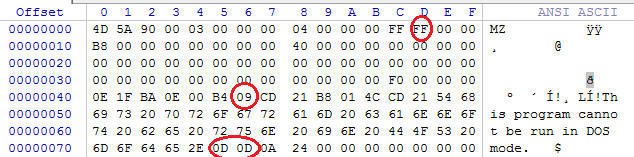
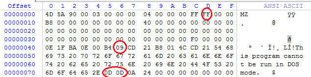

Alternate method to get TAB, Carriage return and possibly all others
Posted: 21 Apr 2018 12:48
As you may all know, the contents of every 32 and 64 bit windows PE Image(Executables, DLLs, OCX,...) starts with a tiny DOS stub header known as MZ header which have enough logic to display the message "This program cannot be run in DOS mode." if that executable get launched from real DOS mode, and that stub header in turn has a pointer (at offset 0x3C) to the PE header of the executable so windows can recognize and load the actual image.
From near 25 years ago that Microsoft released its first 32-bit OS with windows NT 3.1, that stub header didn't change a bit, and today with the latest version of Windows 10 that MZ header is bit by bit the same as it was 25 years ago(with the exception of PE pointer at offset 0x3C of course, which can be different across executables not just windows versions).
In fact, windows itself has nothing to do with that MZ header and it is the output of the Microsoft Linker in its compilers toolset. That header has not changed along this many years and there is no reason for Microsoft to change that in the future
So this opens the opportunity to extract the useful bytes from that header in a way that is consistent across all versions of windows (At least from Win2K) and produce the same and predictable result.
For start let's take a look at the contents of this header

The most interesting ones are those marked in red, the rest are not generally so useful by themselves unless we have at least other extended or control characters as well.
So we have TAB at offset 0x46, 0xFF delimiter at offsets 0x13 ,0x14 and two consecutive Carriage returns at offset 0x75 which makes it possible to grab the first CR.
We can grab TAB from the header with this code:
EDIT: Revised code (May/10/2018:)
Old code for reference:
Grabbing 0xFF (nbsp) is similar (Revised)
And for CR
with DelayedExpansion it will be easier to read:
I know I know we already have a nice neat small fast understandable excellent method for grabbing CR
They are not comparable in any way in terms of simplicity and speed. In addition to the long, ugly and cryptic logic of this new method for grabbing CR, it is much more slower (though not noticeable), because it involves creating of 4 concurrent processes (3 of cmd and 1 of findstr) to grab a single CR character
But for me and I'm sure for many of you, a big part of the reason for which we even put some of our efforts to program in batch is the fun and pleasure it gives by challenging ourselves to solve problems in a limited and at same time nostalgic environment, and it adds even more to the fun when you know CR is a very hard to catch character.
Aside from that, it is always good to have alternate methods at hand, even if we don't use them at all. For instance, very unlikely though, if Microsoft decides to change the output format of copy /Z or make it to not produce CR when the target file is nul then we have an alternate method which works from win2K and up. Not so bad.
EDIT (May/10/2018)
Another method to gain CR along with the explanation of potential failure for COPY /Z method is given by carlos in the next reply to this post
Important Note:
As you will see in the discussions in this thread, because of the presence of extended ASCII characters in the MZ header, the above codes can not be used to reliably capture the mentioned characters in all locales and code pages. specially on systems where the a multi-byte code page is active like 932 or 950 (Chinese, Korean, Japanese,...). You will see the workaround to overcome the limitation, but it is generally not worth the effort for obtaining single character like TAB.
But if it works on your system you can safely use them for your own local needs.
Continue reading to see alternate methods for obtaining all ASCII characters.
/EDIT
And for the sake of completeness this is the code which will grab all the 13 non-printable characters(except <NULL> of course) in the MZ header at once, and saves them to a file.
It should work the same on Win2K to Win10. (Personaly I've tested with 2K,XP, Win7 and Win10)
Now I'm thinking about attacking NLS files. the code page files which you can find all of the 255 byte ranges in them, and the good news is that they are also unchanged at least from the days of Win2k, well not all them but many of them.
For instance these files are all same from Win2k to Win10
c_1252.nls have all the characters from to 255 all in a row except the for the range 0x80-0x9F which some of them are present is random locations
and the missing range can be found in c_950.nls for example.
It should be easy to extract the bits from those files but I currently (maybe for one or to days) don't have time to delve more in to this. So this maybe the subject of more investigation if anyone have found interest in it.
EDIT (May/10/2018)
Preliminary demo code for obtaining complete ASCII table through NLS files was made available at Apr/27/2018
Improved code posted at May/10/2018
Other alternate methods are also available by carlos's genchr (actually from 2014 but discussed again in this thread, and is under review again for improvement) and by penpen which uses a very nice technique using code page transformation which does not have reliance on any external binary file format.
So continue reading.
From near 25 years ago that Microsoft released its first 32-bit OS with windows NT 3.1, that stub header didn't change a bit, and today with the latest version of Windows 10 that MZ header is bit by bit the same as it was 25 years ago(with the exception of PE pointer at offset 0x3C of course, which can be different across executables not just windows versions).
In fact, windows itself has nothing to do with that MZ header and it is the output of the Microsoft Linker in its compilers toolset. That header has not changed along this many years and there is no reason for Microsoft to change that in the future
So this opens the opportunity to extract the useful bytes from that header in a way that is consistent across all versions of windows (At least from Win2K) and produce the same and predictable result.
For start let's take a look at the contents of this header

The most interesting ones are those marked in red, the rest are not generally so useful by themselves unless we have at least other extended or control characters as well.
So we have TAB at offset 0x46, 0xFF delimiter at offsets 0x13 ,0x14 and two consecutive Carriage returns at offset 0x75 which makes it possible to grab the first CR.
We can grab TAB from the header with this code:
EDIT: Revised code (May/10/2018:)
Code: Select all
((for /L %%P in (1,1,70) do pause>nul)&set /p "TAB=")<"%COMSPEC%"
set "TAB=%TAB:~0,1%"
Code: Select all
set "TAB="
for /F "delims=" %%Z in (
'^(type "%COMSPEC%"^|^(^(for /L %%P in ^(1^,1^,70^) do @pause^>nul^)^&set /p "TAB="^&call echo^,%%TAB%%^)^)2^>nul'
) do set "TAB=%%Z"
set "TAB=%TAB:~0,1%"
Code: Select all
((for /L %%P in (1,1,12) do pause>nul)&set /p "NBSP=")<"%COMSPEC%"
set "NBSP=%NBSP:~0,1%"
And for CR
Code: Select all
for /F "tokens=1* delims=." %%Y in (
'type ^"%COMSPEC%^"^|^(^(for /L %%P in ^(1^,1^,78^) do @pause^>nul^)^&2^>nul ^"%SystemRoot%\system32\findstr.exe^" /B /C:^"This program cannot be run in DOS mode.^"^)'
) do set "CR=%%Z"
Code: Select all
setlocal EnableDelayedExpansion
set "q=""
for /F "tokens=1* delims=." %%Y in (
'"type !q!%COMSPEC%!q!|((for /L %%P in (1,1,78) do @pause>nul)&2>nul !q!%SystemRoot%\system32\findstr.exe!q! /B /C:!q!This program cannot be run in DOS mode.!q!)"'
) do set "CR=%%Z"
I know I know we already have a nice neat small fast understandable excellent method for grabbing CR
Code: Select all
for /F %%Z in ('copy /Z "%~dpf0" nul') do set "CR=%%Z"
But for me and I'm sure for many of you, a big part of the reason for which we even put some of our efforts to program in batch is the fun and pleasure it gives by challenging ourselves to solve problems in a limited and at same time nostalgic environment, and it adds even more to the fun when you know CR is a very hard to catch character.
Aside from that, it is always good to have alternate methods at hand, even if we don't use them at all. For instance, very unlikely though, if Microsoft decides to change the output format of copy /Z or make it to not produce CR when the target file is nul then we have an alternate method which works from win2K and up. Not so bad.
EDIT (May/10/2018)
Another method to gain CR along with the explanation of potential failure for COPY /Z method is given by carlos in the next reply to this post
Important Note:
As you will see in the discussions in this thread, because of the presence of extended ASCII characters in the MZ header, the above codes can not be used to reliably capture the mentioned characters in all locales and code pages. specially on systems where the a multi-byte code page is active like 932 or 950 (Chinese, Korean, Japanese,...). You will see the workaround to overcome the limitation, but it is generally not worth the effort for obtaining single character like TAB.
But if it works on your system you can safely use them for your own local needs.
Continue reading to see alternate methods for obtaining all ASCII characters.
/EDIT
And for the sake of completeness this is the code which will grab all the 13 non-printable characters(except <NULL> of course) in the MZ header at once, and saves them to a file.
It should work the same on Win2K to Win10. (Personaly I've tested with 2K,XP, Win7 and Win10)
Code: Select all
:: This should produce the exact same output running from Win2k through Win10
@echo off
setlocal EnableExtensions
call :GetMZBits
:: Now we have access to ASCII_xx vars
setlocal EnableDelayedExpansion
set "prompt="
for %%i in (01 03 04 09 0D 0E 90 1F B4 B8 BA CD FF) do set "prompt=!prompt!!ASCII_%%i!"
"%COMSPEC%" /d /k<nul>"PE_MZ_Header_Special_Chars.bin"
endlocal
echo,
echo The non-printable chars from Standard MZ header of PE images have been extracted and written to "PE_MZ_Header_Special_Chars.bin"
echo,
echo It should have the sequence:
echo 0x01,0x03,0x04,0x09,0x0D,0x0E,0x90,0x1F,0xB4,0xB8,0xBA,0xCD,0xFF
echo,
echo Check with your Hex viewer.
pause
exit /b
:GetMZBits
setlocal EnableDelayedExpansion
set "q=""
(set \n=^%===<no_white_spaces_allowed_before_or_after_me>===%
%============<no_white_spaces_allowed_before_or_after_me>===%
%============<no_white_spaces_allowed_before_or_after_me>===%)
set "@{DeferExecute}=(endlocal!\n!"
for /F "usebackq tokens=1-3 delims=, " %%1 in ('
2,0,90,!\n!
4,0,03,!\n!
8,0,04,!\n!
13,0,FF,!\n!
64,4,0E1FBA,!\n!
69,4,B409CD,!\n!
73,2,B801
') do (
set "Capture="
for /F "delims=" %%Z in (
'"(type !q!%COMSPEC%!q!|((for /L %%P in (1,1,%%1) do @pause>nul)&set /p !q!Capture=!q!&call echo,%%Capture%%))2>nul"'
) do set "Capture=%%Z"
set "Index=%%3"
for /L %%i in (0,2,%%2) do (
set /a "j=%%i/2"
for %%j in (!j!) do (
set "@{DeferExecute}=!@{DeferExecute}!set ASCII_!Index:~%%i,2!=!Capture:~%%j,1!!\n!"
)
)
)
set "@{DeferExecute}=!@{DeferExecute}!for /F !q!tokens=1* delims=.!q! %%Y in ('type ^^!q!%COMSPEC%^^!q!^^|^^(^^(for /L %%P in ^^(1^^,1^^,78^^) do @pause^^>nul^^)^^&2^^>nul ^^!q!%SystemRoot%\system32\findstr.exe^^!q! /B /C:^^!q!This program cannot be run in DOS mode.^^!q!^^)') do set ASCII_0D=%%Z!\n!)"
%@{DeferExecute}%
exit /b
For instance these files are all same from Win2k to Win10
Code: Select all
c_437.nls SHA1: 244ca701ca85e1ad389519e7c6655e609f70f39c
c_1252.nls SHA1: 355e2ada0b9ea4f2a844c2d236d1b48336881b22
c_936.nls SHA1: 74f6157dbd1fe91acaf322a459019c1bb719604c
c_949.nls SHA1: c64638cdf715f2c4ef5e29ba7b680fdc8e9bf736
c_950.nls SHA1: 1cd3f1ccf03d2b2d00dd3a133a6bebaa0e1bdb89
and the missing range can be found in c_950.nls for example.
It should be easy to extract the bits from those files but I currently (maybe for one or to days) don't have time to delve more in to this. So this maybe the subject of more investigation if anyone have found interest in it.
EDIT (May/10/2018)
Preliminary demo code for obtaining complete ASCII table through NLS files was made available at Apr/27/2018
Improved code posted at May/10/2018
Other alternate methods are also available by carlos's genchr (actually from 2014 but discussed again in this thread, and is under review again for improvement) and by penpen which uses a very nice technique using code page transformation which does not have reliance on any external binary file format.
So continue reading.